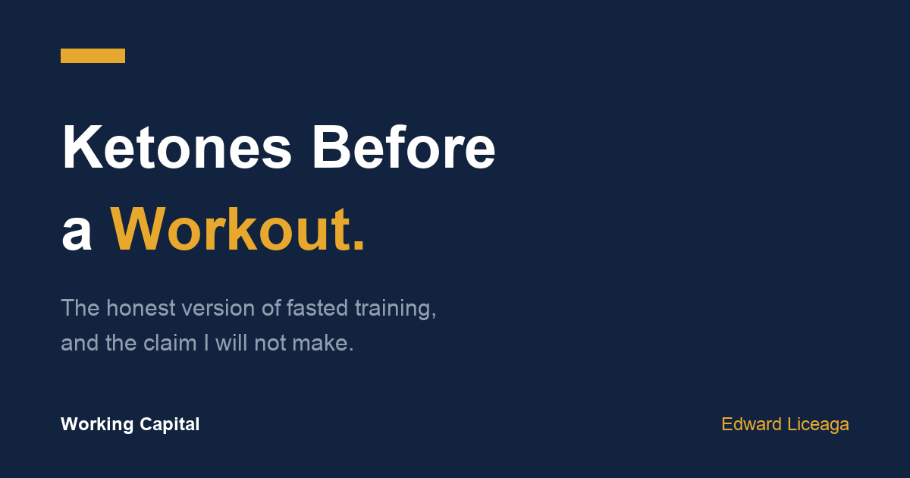

Ketones Before a Workout: The Honest Version of Fasted Training
What ketones before a workout actually do for fasted training, and the claim I am not going to make.

I train early, usually before I have eaten anything, and for years I did that on water and stubbornness.
The question I get now, mostly because I sell a ketone drink, is whether taking ketones before a workout makes fasted training better. I am going to answer that honestly, which means the answer has a no in it.
What fasted training actually is
Training fasted means starting a session with low available glucose. Liver glycogen is partly drawn down overnight, blood sugar sits near baseline, and there is no recent meal to pull from. Your body covers the gap by using more fat and by producing ketones in the liver.
That is not an alternative metabolism or a hack. It is ordinary human physiology doing what it does whenever food is not currently arriving. You make ketones every night while you sleep.
People train fasted for different reasons. Schedule, digestion, preference. I do it because I am at the desk by a set hour and eating before a session makes me sluggish for the first twenty minutes of it.
The part of fasted training that is actually hard
It is not the muscles. It is the head.
Strength on a fasted morning is mostly fine for the kind of training most people do. What changes for me is attention. The reps are there; keeping count of them is the part that slips. Same on the trading side of the morning, which is where I notice it more, because a session where I am half present is more expensive than a session where I am one rep short.
If you train fasted regularly, you probably know the specific feeling. Not weak. Foggy.
Where ketones come in, and where they do not
You can drink ketones directly. That raises circulating ketones without fasting for hours or rebuilding your diet around it.
Here is where I have to be careful, because I am a Kenetik rep and I earn a commission on the link at the bottom of this piece. So take the most conservative version of what I will say.
I am not claiming ketones make you stronger, faster, or fitter. I am not claiming they improve endurance, recovery, or body composition. The research on exogenous ketones and athletic performance is genuinely mixed, and I am the last person whose performance claim you should accept, because I have a financial reason to make one.
What I will say is the only claim Kenetik makes: it supports clarity, focus, and cognitive endurance.
That is the brain side. The brain side happens to be the part of fasted training that actually degrades for me, which is why this is the version of the topic I find worth writing about.
Why the brain part is the one worth talking about
Your brain is expensive to run. It is a small share of your body weight and takes roughly twenty percent of your resting energy, and it accepts two fuels: glucose and ketones. That is the whole menu.
Train fasted and you have deliberately made one of those two scarce. Drinking the other one is not exotic. It is the second item on a two item list.
The usual answer to a fasted session is caffeine, and caffeine works differently in a way that matters. Caffeine blocks adenosine, the molecule that builds up while you are awake and makes you feel tired. Blocking the signal is not the same as supplying fuel, and the adenosine keeps accumulating behind the block. I wrote about that at length in The 2 PM Wall, which covers the afternoon version of the same problem.
A stimulant hides the tired. A nutrient feeds the work. On a fasted morning that difference is the entire point.
What I actually do
It is unremarkable, which is the honest part. On days I train before eating, I take the two ounce shot, ten grams of ketones plus electrolytes, about fifteen minutes before I start. On desk mornings I use the can instead, twelve grams, usually at the open.
The label facts, so you can check them rather than take my word: twelve grams of ketones per can, zero caffeine, zero sugar, sixty calories, nothing artificial. It is Informed Sport certified, which means batches get tested by an outside lab against a banned substance list. If you compete in anything tested, that certification is worth more than any sentence I could write. It is also the official ketone shot of TRX.
On delivery specifically, an independent University of Pennsylvania study (Li et al., 2024) measured roughly four times the circulating ketones compared to the leading commercial ketone product. That is a comparison of how much of the nutrient reaches your blood. It is not a promise about how your session goes.
The honest summary
If you train fasted and it works for you, keep training fasted. It requires no product and never did.
If the thing that slips in your fasted sessions is your ability to think clearly through them, then giving your brain the one fuel you have not made scarce is a reasonable thing to try, as long as you set the expectation correctly.
Two things I would tell anyone before they spend money on it. It is not a stimulant, so if you are waiting for a hit you will decide it did nothing. And it will not fix a five hour night or an under eaten week. Nothing will.
That is the whole case, and I would rather make a narrow one that holds than a wide one that does not.
If you want to try it, my link is drinkkenetik.com/EDDIEG. I earn a commission on purchases through it.
Earlier: The 2 PM Wall, on the afternoon slump and why a fourth coffee keeps making tomorrow worse.